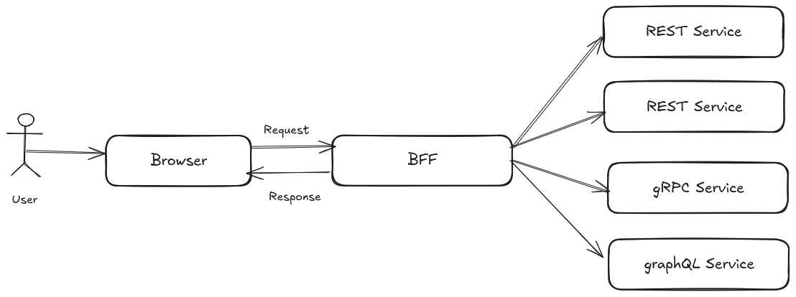

BFF (Backend for Frontend)
BFF is a pattern that consists of creating a backend service customized for a frontend application (web, mobile app, desktop app...). Backend is usually a composition of multiple services, each of them providing different functionalities and supporting different protocols. The BFF is responsible for aggregating/transform the data from these services and providing a single endpoint for the frontend specific needs. This process simplifies logic in frontend, and frontends can evolve independently from the backend.
Having this intermediate transformation layer between the frontend and the backend services, provides the following benefits:
- Performance: The BFF can aggregate data from multiple services and reduce the number of requests made by the frontend.
- Security: The BFF can handle authentication and authorization to each backend, so frontend can be stateless.
- Flexibility: The BFF can be customized for each frontend, providing only the data and format needed by the frontend, reducing the payload size.
- Efficiency: The BFF can be optimized for the frontend, providing complex common business logic to the frontend.
- Cache: The BFF can cache data from the backend services, reducing the load on the backend services.
